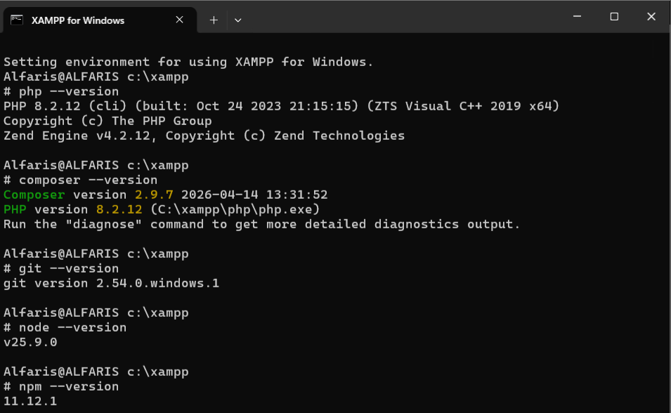
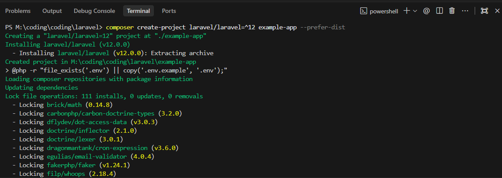
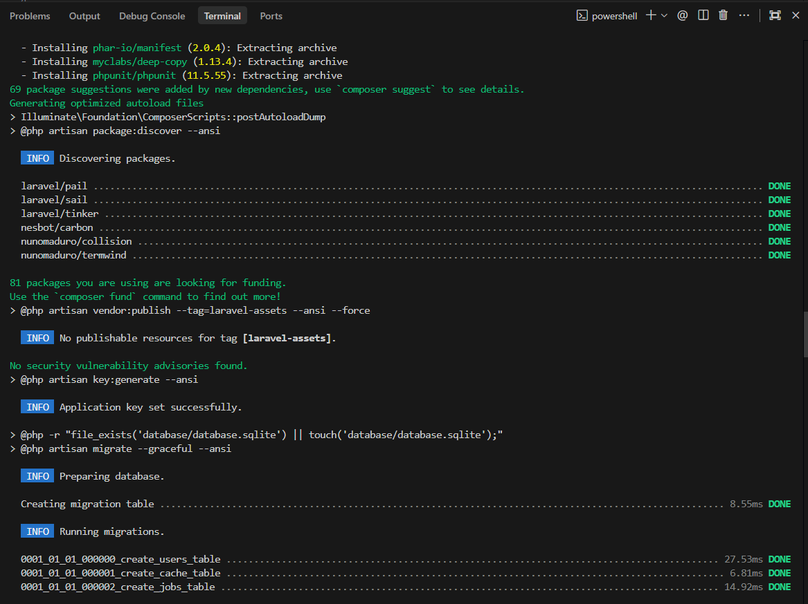
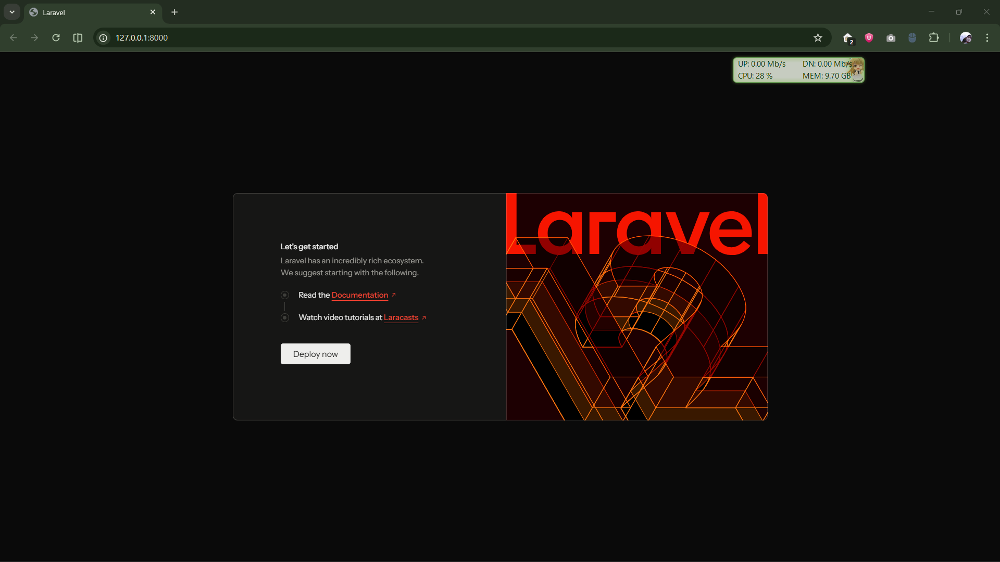
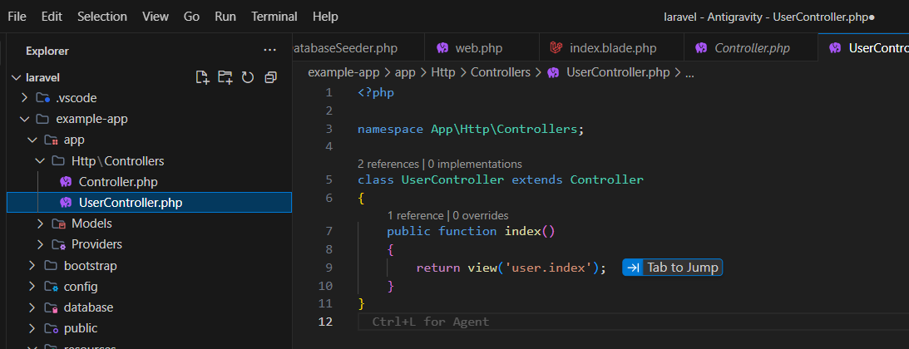
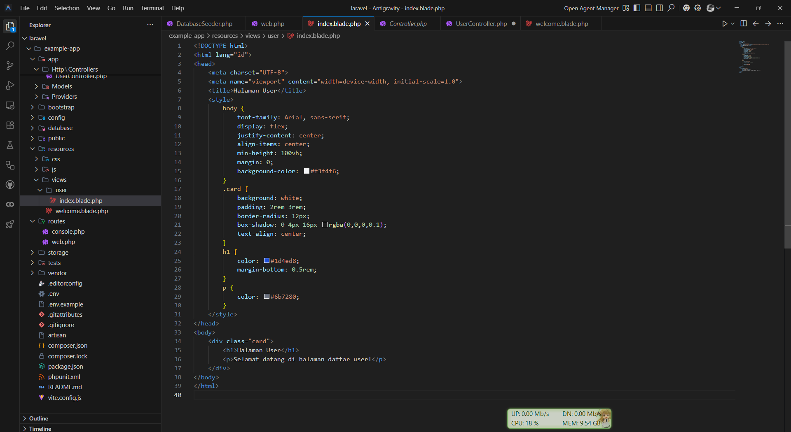
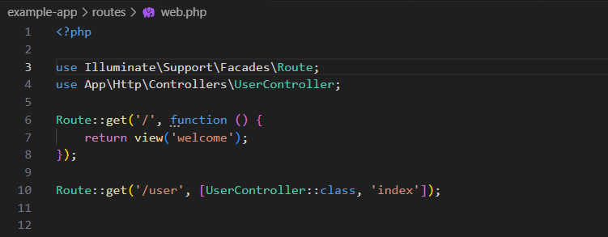
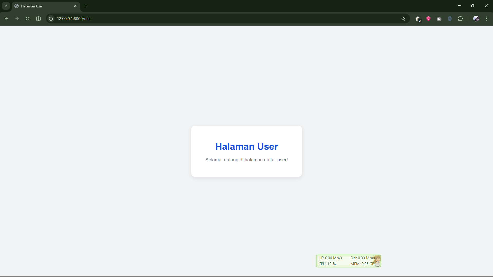

Mata Kuliah Desain Web
1.1 Tujuan
1.2 Alat
1.3 Langkah Pengerjaan Praktikum
Sebelum memulai membuat proyek Laravel, kita harus menyiapkan terlebih dahulu lingkungan development.
1) Persyaratan Sistem
Laravel memiliki persyaratan minimal sistem. Adapun persyaratan Laravel 12 sebagai berikut:
Selain itu perlu diinstall Git dan Composer, serta membutuhkan Web Server (XAMPP), MySQL, dan PhpMyAdmin.
2) Install XAMPP
Download XAMPP pada apachefriends.org kemudian install sesuai langkah wizard. Setelah terinstall akan muncul folder htdocs pada C:\xampp\htdocs. XAMPP secara otomatis akan menginstall Apache, PHP, dan PhpMyAdmin.
3) Install Composer
Composer adalah package manager untuk PHP. Download pada getcomposer.org/Composer-Setup.exe, lalu install sesuai langkah wizard.
4) Install GIT
Download dan install GIT pada git-scm.com/downloads/win.
5) Install Node JS dan NPM
Node JS berfungsi untuk menangani masalah frontend dan build asset UI. Download di nodejs.org dan install sesuai wizard. NPM otomatis terinstall bersama Node.js.
6) Cek semua versi
Pastikan seluruh requirement Laravel terpenuhi.

Gambar 1. Pengecekan requirement Laravel
Buat project Laravel menggunakan Composer. Buka terminal pada IDE Editor dengan menekan Ctrl + Shift + `, lalu jalankan perintah berikut:

Gambar 2. Proses pembuatan project Laravel menggunakan Composer
Project berhasil dibuat.

Gambar 3. Project telah berhasil dibuat
Untuk menjalankan project Laravel, gunakan perintah:
Akses http://localhost:8000 untuk memastikan Laravel berjalan dengan baik.

Gambar 4. Laravel berhasil berjalan pada localhost:8000
UserController.index.user/index)./user menampilkan view tersebut.
Gambar 5. User Controller dan function index

Gambar 6. Views di dalam folder resources

Gambar 7. Routing /user pada file web.php

Gambar 8. Tampilan halaman HTML sederhana pada view user/index
Informasi
| Mata Kuliah | Desain Web |
| Pertemuan | 6 |
| Nama | Alfaris Aulia Rahman |
| NIM | 2411533006 |
| Status | Selesai |
Daftar Pertemuan